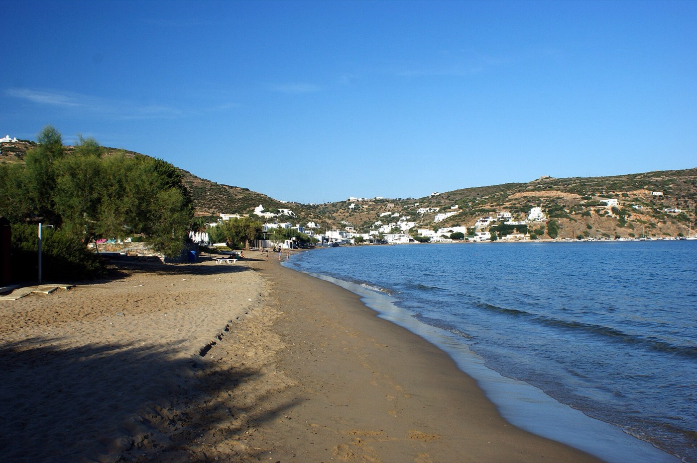
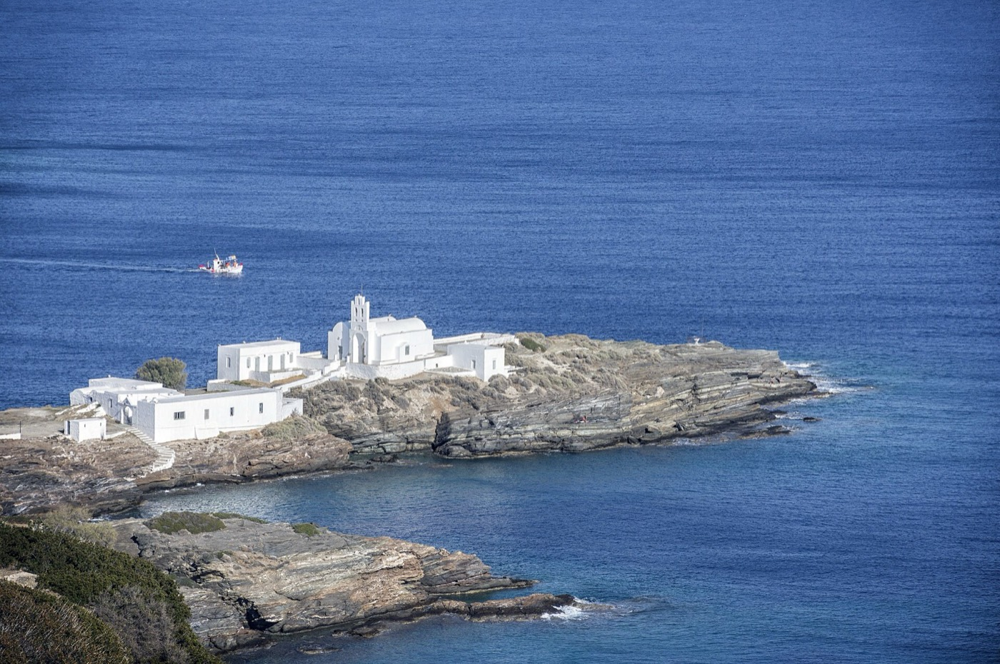
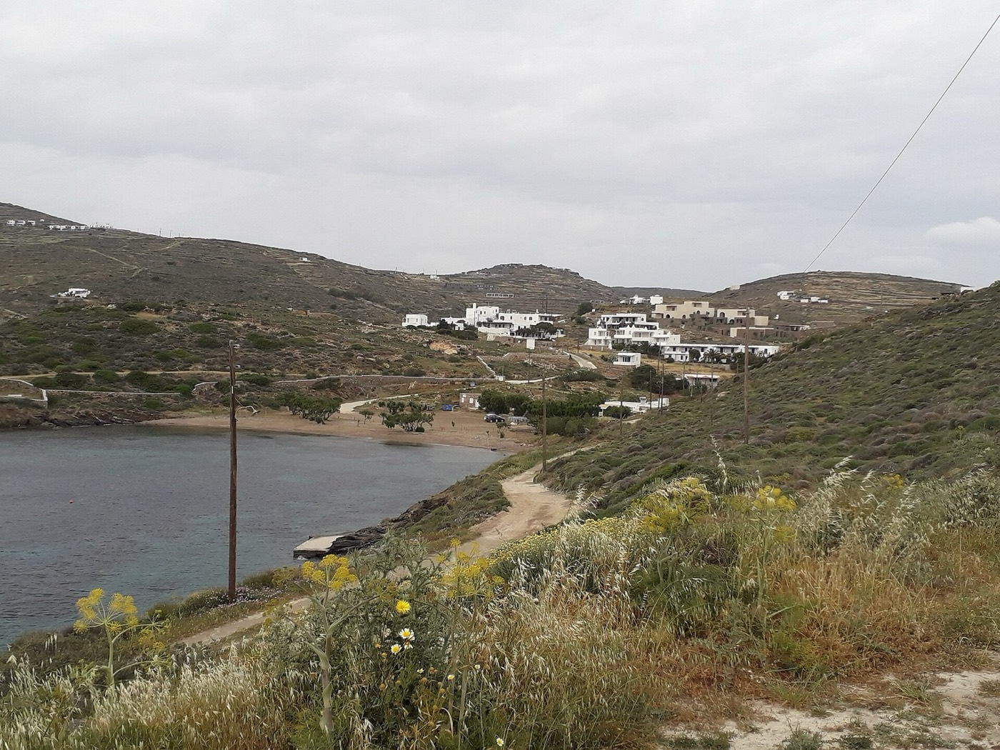

Sifnos
Beaches
From the house you can walk to two beaches. The rest of the coast is a short drive, a bus ride or a walk away.
We list them by how far they are from Platys Gialos. When the north wind blows, the south-facing bays are usually calmer.

Photo: Kondephy, CC BY-SA 4.0, via Wikimedia Commons

On foot from the house
Platys Gialos is below us; Lazarou is on the other side of the headland.
-
Platys Gialos
- A long, wide sandy beach with shallow, calm water.
- Sunbeds and umbrellas, tavernas, cafés and water sports along the front; the small marina is at the west end, near our headland.
- About five minutes’ walk from the house. The bus from Apollonia and Artemonas ends here.
-
Lazarou
- A small pebble cove below the headland, reached on foot, with clear deep water.
A short drive
Along the south-east coast, between Platys Gialos and Kastro, and the bay of Vathi to the south-west.
-
Chrysopigi and Apokofto
- The monastery of Chrysopigi stands on a rock in the sea, with sand and flat rocks on either side.
- Apokofto is the small sandy beach next to it, without sunbeds. There are tavernas nearby.
- Park and walk a short way, or arrive on foot by the coastal path from Faros (trail 2).
-
Faros and Fasolou
- Faros is an old fishing harbour with small beaches, calm water and tavernas on the waterfront; it can be windy.
- Fasolou is the sandy cove next door, up an alley from the Faros bus stop, with a taverna nearby.
-
Glyfo
- A small sheltered bay a short walk from Faros, at the start of the coastal path to Apokofto and Chrysopigi.
- Some tamarisk shade and few facilities.
-
Vathi
- A large sandy beach in an almost enclosed bay, with calm, shallow water.
- Tamarisk shade as well as sunbeds and umbrellas; tavernas on the waterfront and pottery workshops nearby.
- By car or bus, or on foot from Platys Gialos by trails 4 and 4A.

Photo: KASPAR, CC BY-SA 4.0, via Wikimedia Commons

Further afield
The port, the coast below Kastro, and the north of the island.
-
Kamares
- The beach at the port: long, sandy and shallow.
- Sunbeds, a beach bar, cafés, tavernas and a playground; frequent buses.
-
Seralia
- A small pebble beach at the old harbour below Kastro, with a fish taverna.
- Pebbles and rocks at the water’s edge.
-
Poulati
- Rocks below the chapel of Panagia Poulati, with small pockets of sand and deep clear water.
- No facilities. Reached by a path from Kastro (on trail 1), with steps down at the end.
-
Heronissos
- A very small sandy beach in a fishing hamlet at the northern tip of the island, with calm water.
- Not organised; tavernas and a pottery workshop. Bus from Artemonas; trail 9 ends here.
-
Vroulidia
- A north-coast bay near Heronissos with sand and white pebbles and deep, clear water.
- Reached by a side road; a beach bar has been reported. Ask us how the road is this year.
On foot only
For a day’s walk.
-
Fykiada
- A remote bay between Platys Gialos and Vathi with no road: you walk in, through an old olive grove.
- Part of the trail 4 loop from Platys Gialos, which is steep in places. No facilities; take water.

Photo: Catlemur, CC BY-SA 4.0, via Wikimedia Commons

Blue Flag awards change every year; we have not listed them. Facilities can change from one summer to the next.